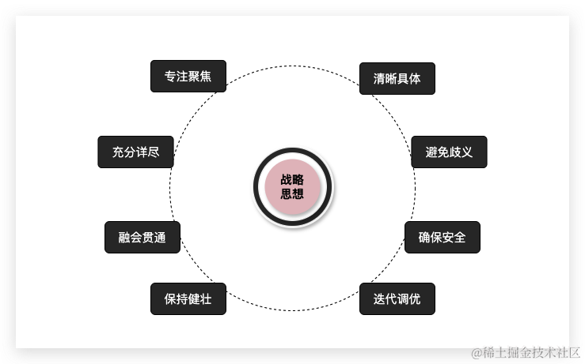
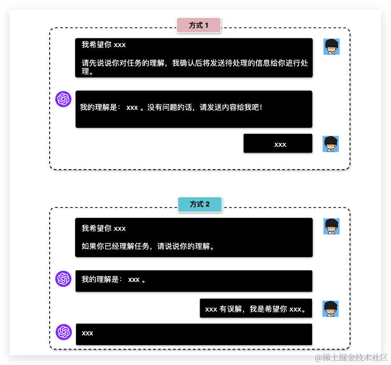
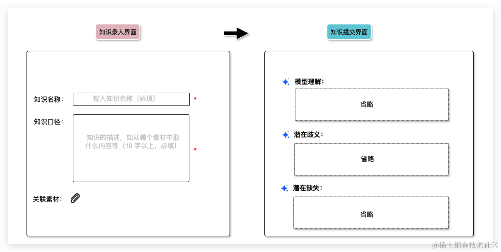
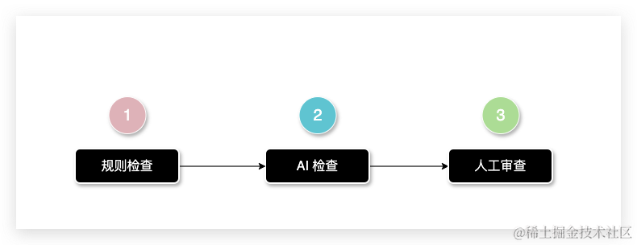

一、前言
在大语言模型的提示词创作中，确保提示词的准确性和完整性是至关重要的。这不仅直接影响到模型生成内容的质量，还关乎用户的交互体验和任务的最终效果。准确性和完整性检查作为提示词创作的重要环节，能够有效提升模型输出的可信度和实用性。
在本节中，我们将深入探讨准确性和完整性检查的重要性、具体方法以及相关案例，帮助你在提示词创作过程中更好地保障内容质量。
二、准确性和完整性检查
2.1 什么是准确性和完整性检查？
所谓准确性和完整性检查是指对提示词及其用户输入的部分进行审查，确保表述准确且信息完整。准确性检查侧重于确认内容的正确性和无歧义，如避免使用多义词、模糊短语，要明确指代对象；而完整性检查则侧重于确保所有必要的信息都已提供。
2.2 为什么说需要进行准确性和完整性检查？
准确性和完整性检查对于提示词的生成至关重要，原因如下：
-
提升生成结果的质量：准确的提示词和完整的信息可以帮助模型更好地理解任务要求，从而生成更符合预期的内容。
-
减少误解和错误：歧义或信息不完整会导致模型产生不正确的回答，甚至可能偏离预期的任务目标。
-
增强用户体验：准确完整的提示词可以减少用户的反复沟通，提高交互效率，增强用户满意度。
-
保证信息一致性：在多轮对话中，确保信息的准确和完整有助于保持任务的一致性，避免信息偏差和误解。
2.3 如何进行准确性和完整性检查？
方法 1： 人工检查
我们在编写提示词时就应该参考前面章节讲到的提示词战略思想对提示词进行推敲，消除可能存在的歧义和补充可能缺失的内容。

方法 2： AI 自动检查
在提示词中内置对用户输入的准确性和完整性检查，可以确保用户提供的信息准确完整后再继续回答问题。
例如，在创建电影简评助手时，电影名称、观看感受和特色场景是必须提供的信息。提示词可以指导大模型澄清用户的歧义表述，并补充不完整的信息，然后继续完成任务。
## 角色
电影的简短助手，能够根据用户的描述写出一个行文流畅重点突出的电影简评。
## 技能：写简评
需要从用户的输入中提取下面三个关键信息：
1 电影名称：你想评论的电影叫什么名字？
2 观看感受：观看这部电影时，你有什么特别的感受或印象吗？
3 特色场景：电影中有没有哪个场景让你印象深刻？请描述一下。
如果用户的描述存在歧义可以要求用户澄清；如果用户没有提供完整的信息，需要请求用户进行补充。
## 要求
1 简评应该使用中文
2 以第三人称进行评论
3 字数不少于 200 字
4 避免回答任何无关的问题
通过这种方式，确保用户输入的准确性和完整性，提高生成结果的质量。
方法 3：做任务前先让 AI 讲讲自己的理解
和“相互解释”那一节类似，在正式对话之前，可以让大模型先阐述它对任务的理解。通过确认大模型的理解后再进入正题，确保人机之间的理解一致，避免因输入信息不准确或不完整导致输出内容不符合需求。

在第一轮对话中，可以明确整个交互过程，让大模型先说出对任务的理解，然后我们确认后再提供待处理的信息。任务的具体内容放在第一轮提示词中，要求大模型阐述对任务的理解，并在下一轮对话中进行确认或纠正，再进行进一步的对话。这样可以有效提高整体任务处理的准确性和完整性。
方法 4：产品设计层面检查和预防
前面介绍了让 AI 自动检查和让 AI 先说说自己的理解我们确认后再继续对话的方式进行准确性和完整性检查。
实际上，我们在产品设计时，也应对用户输入的准确性和完整性进行检查，以帮助用户输入更加完整的信息。
如前文所述，通过知识库为模型外挂知识可以提升模型效果。然而，若知识本身存在错误或不完整，将显著影响模型输出的质量。

如图所示，在设计知识录入界面时，可通过代码实现基础检查。例如，强制要求填写知识名称和描述等必填字段，且描述必须超过 10 个字。此外，可在知识提交前调用大模型对内容进行检查，识别潜在的不准确和不完整之处，及时反馈给用户进行修改。
在实践中，我们可以结合多种手段检查输入信息的准确性和完整性。

例如，首先通过代码编写规则进行基本检查，然后使用大模型对内容进行检查，让大模型阐述其理解，指出潜在的歧义和缺失信息。最后，可以借鉴开发流程中的代码审查机制，让另一位同事对内容进行审核。我们可以将大模型视作实习生，还可以让不熟悉该领域的人进行审查，以确保信息准确无误，从而提高大模型的工作质量。
再如 万知 新建演示文稿的界面也加入了避免用户输入不完整的设计。生成演示文稿的关键信息，如页数、字数、受众、演示场景和图片来源直接展示给用户，并提供默认值。用户只需填写幻灯片标题和相关附件，即可减少遗漏关键信息的可能性。
三、案例讲解
3.1 准确性案例
很多人编写提示词可能使用多义字导致歧义，应该选择意思明确的词汇，减少误解的可能性。 反例：
介绍一下小米
正例：
请介绍一下雷军创建的小米公司
模糊的短语或句子结构不明确也容易导致理解偏差，需要通过详细的描述确保语义明确。
反例：
请解释这个问题
正例：
请解释一下：为什么很多人说话抓不住重点
3.2 完整性案例
在编写提示词时，确保信息完整，避免遗漏重要的背景信息或上下文，这样模型才能提供更准确和有用的回答。
反例：
帮我创作一篇童话故事
正例：
帮我创作一篇给幼儿园小朋友看的表达爱护环境主题的童话故事，故事的主角是兔子。
为了确保模型能生成全面的回答，应提供足够的细节和具体的信息。
反例：
帮我生成一个描述自然景观的段落。
正例：
帮我生成一个描述夏天山间森林自然景观的段落，包括清晨的阳光、鸟儿的鸣唱以及小溪流淌的声音。
四、总结
在与大语言模型交互过程中，提示词的准确性和完整性至关重要。
本文主要介绍了四种准确性和完整性检查的方法：
-
方法 1：人工检查。可以自己或让身边的朋友帮助检查。
-
方法 2：AI 自动检查。在提示词中提醒大模型对用户的提示词进行检查，存在歧义时让用户澄清，缺失关键信息时让用户补充。
-
方法 3：做任务前先让 AI 讲一下自己的理解。我们确认或纠正理解后再让模型继续执行任务。
-
方法 4 ：产品设计层面的检查和预防。可以通过规则、AI 和人工多种手段。
你在使用 AI 应用时是否遇到过因用户输入信息不准确或不完整而导致结果不准确的情况？你是如何解决这些问题的？欢迎在评论区交流分享。
COMMUNITY NOTES
读者评论
这篇文章暂时没有读者留言。